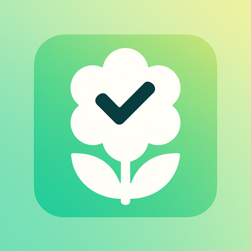
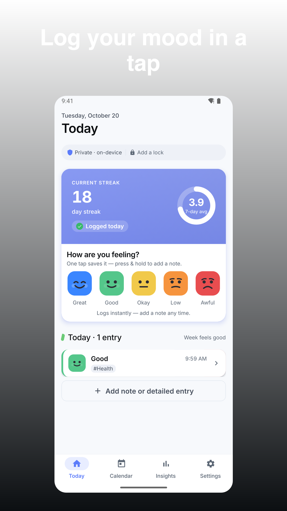
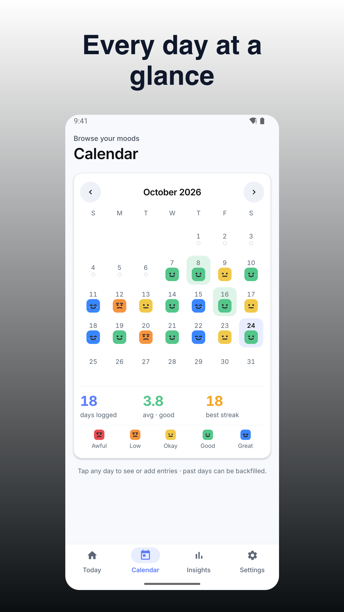
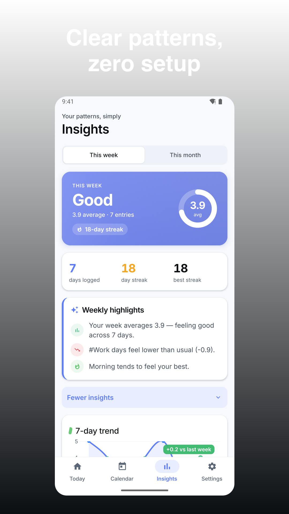
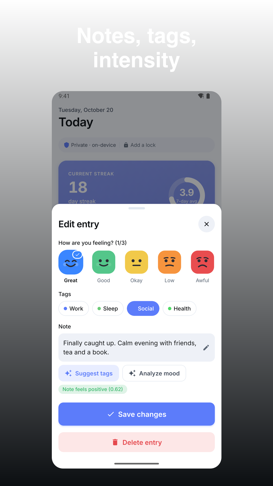
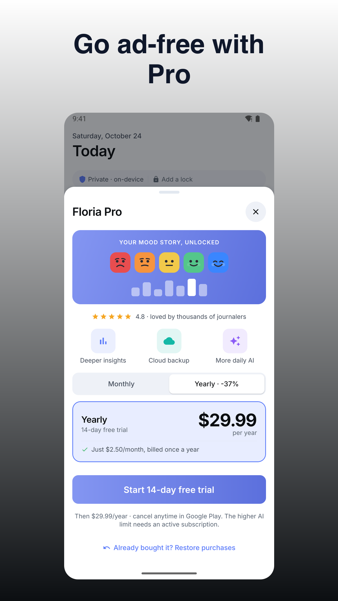

Floria Mood Journal: Tracker
Floria Mood Journal: emoji mood tracker with notes, tags and weekly insights





Floria Mood Journal is a quick, calm way to log how you feel. Tap an emoji, see a clear "Saved" confirmation, and get on with your day. Add a note or tags only when you want to.
QUICK, FLEXIBLE LOGGING
• One-tap emoji mood tracker: log several times a day, each entry timestamped
• Undo right after saving
• Customize your moods: rename, change emoji and colors, reorder
• Pick up to 3 moods per entry and add an optional 1–10 intensity
• Tags such as Work, Sleep or Family, with a simple tag manager
• Quick note editor with a full-screen mode and autosave
SEE YOUR PATTERNS
Your mood journal turns into easy-to-read trends.
• Monthly calendar with colors showing how each day felt
• Search entries by text, tag or emoji
• Add or edit missed days from the past
• Weekly and monthly insights: averages, top tags and time-of-day patterns
• Optional AI summary of your notes, only when you ask for it
FAIR STREAKS AND GENTLE REMINDERS
• Set your own day start time and a late-entry grace window, so a late-night entry doesn't break your streak
• Multiple reminders on the days and times you choose, with snooze
PRIVATE BY DESIGN
Floria Mood Journal keeps your entries on your device. Signing in is optional.
• PIN and biometric app lock
• Backup and restore your data
• Export your entries as CSV or JSON
• Optional sign-in with an email code to back up and sync your own entries across devices; data is encrypted in transit and at rest
• AI features need an internet connection. The text you submit is sent to our server and processed by our AI provider. Every AI reply has a "Report this AI response" button
• You can delete your account and data in the app (Settings → Account) or on the web
FREE AND PRO
Floria Mood Journal is free to use for mood logging, notes, tags, calendar, insights, reminders, app lock, backup and export. The free version shows ads. Pro, available as a one-time purchase or subscription through Google Play, removes ads. Prices and billing terms are shown before you buy, and you can restore purchases at any time.
Note: this emoji mood tracker is for personal self-reflection. It is not a medical device and does not diagnose, treat or replace professional care. If you are struggling, please talk to a qualified professional.
Download Floria Mood Journal and log your first mood in seconds.
Support: jeets98e@gmail.com